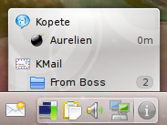

Disclaimer: The opinions of this post are my own, they do not necessarily reflect Canonical position.
Imagine you receive an incoming message from your IM client while you are away from your machine. A notification gets shown, but this notification goes away after a few seconds. You just missed it.
Since the IM client supports indicators, it also created an indicator for this incoming message. When you come back to your desk, you notice the spark on the indicator plasmoid. Clicking on the plasmoid popups a menu listing all indicator-enabled running applications. Below your IM application entry, there is an entry for this incoming message you received. You click the entry and the chat window is brought to the front.
You would also like to know if you have any unread message in this "From Boss" mail folder. So you look at the mail client entries, and notice that "From Boss" appears, with a count of 2. You click the "From Boss" entry and your mail client is brought to the front, showing the first unread message in the "From Boss" folder.
You are now busy working on this report due to your boss for yesterday. You turned your status to "Busy, Do not Disturb, Will Bite", but that does not stop people from sending messages to you. If your IM client is smart enough, it can disable notifications and only create indicators. When your report is finally done, you can relax, click the indicator plasmoid and start chatting with the people who tried to reach you before.
Back home, you decide to spend the evening watching a movie on your laptop. Since you are running a fullscreen application, notifications are disabled: you do not want to get interrupted by this IRC message from your friend while Bruce Willis is busy saving the world. When world has been saved, you can click the indicator and catch-up with your friend.
QIndicate::Server and QIndicate::Indicator.
The application typically starts with instantiating a server, declaring its desktop file and "server type" (a way to group applications, for now the plasmoid only shows servers with the "messaging" type), then calling the show() method. As soon as this is done, an entry for the application appears in the indicator menu. When the user clicks on this entry, QIndicate::Server emits the serverDisplay() signal. All you have to do is to connect to this signal and bring your main window to front.
When an event worth mentioning to the user happens, you instantiate a QIndicate::Indicator for it. An indicator can have a few properties:
When the user clicks on the indicator entry, QIndicate::Indicator emits a display(QIndicate::Indicator*) signal. Connect to this signal to perform the action relevant to this indicator.
(Note: the properties listed here are those used in the case of messaging communication, but the Indicator API is flexible enough to let you define other indicator properties)
I tried to implement support for indicators as a new way for the notification system to represent notifications, but it did not work because the notification system lacks the server/indicator structure. For example to implement the feature which brings the application to front when you click its entry, I ended up having to remember the window id of the first notification I received so that I could bring back this window. It was unreliable (what if the first window was gone by that time, or even not specified?) and it was not possible to do things like showing a count of unread emails in a folder for example.
In short, it is system tray done right. It is a huge step forward as it makes it easier for the application/toolkit to implement system tray support and it makes it easier for the system tray host to display these icons in a way which is consistent with the rest of the desktop interface.
It expands on the system tray spec by introducing a notion of status (Passive, Active and NeedsAttention), a possible icon overlay and a category (ApplicationStatus, Communications, SystemServices and Hardware).
It has a few features indicators do not have, such as tooltips and support for right-click, middle-click and mouse wheel events.
It does not however provide an equivalent to the server/indicator structure, or to the "count" and "time" properties. This makes it impossible to implement indicators on top of KNotificationItem.
Still, the two systems have quite a few commonalities, so it may make sense to merge them in the future.
The upcoming Ubuntu 9.10 (Karmic) expands on this by providing a Qt binding for libindicate, adding support for indicators to a few Qt and KDE applications and a plasmoid to display indicators on the KDE desktop.
Here are the links to download them:
It still depends on GTK+ at build time because compiling libindicate from source produces libindicate.so and libindicate-gtk.so. libindicate.so depends on GLib, but does not depend on GTK+. I recon depending on GTK+ to build the library is a problem for source-based distribution like Arch Linux or Gentoo, patches from autotools masters are welcome. A bug has been filled to track that issue.
It is a cross-desktop system: indicators from KDE applications show up in GNOME indicator applet, indicators from GNOME applications show up in KDE plasmoid.
You can find all the patches here.
On the GNOME side: